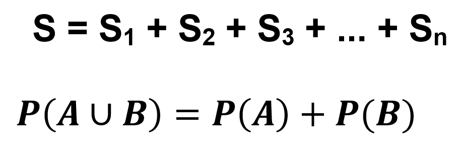
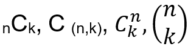
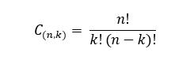

PENDAHULUAN
Ketika kita menonton berita, biasanya diakhir acara akan ada pembacaan perkiraan cuaca disetiap daerah. Perkiraan cuaca tersebut dilakukan oleh seorang forecaster yang didukung oleh alat-alat canggih dan supercomputer milik Badan Meteorologi, Klimatologi, dan Geofisika (BMKG). Bagaimana seorang forecaster dapat melakukan pekerjaannya ? ilmu yang dapat mendukung ketika memperkirakan cuaca yaitu kaidah ilmu fisika, matematika, serta dinamika atmosfer. Ketika ingin melakukan perkiraan cuaca, seorang forecaster akan menganalisis fenomena yang pernah terjadi. Dalam memperkirakan cuaca, kita harus berhati-hati ketika menghitung karena jika salah dalam perhtungan akan mempengaruhi hasil prediksi dan datanya menjadi tidak valid. Hal yang dianalisis yaitu penyebab dan peluang fenomena tersebut kembali terjadi. Hal ini memanfaatkan ilmu peluang suatu kejadian. Ada beberapa metode untuk memprediksikan cuaca, tetapi hasil dari metode tersebut belum mampu memberikan ketepatan yang tinggi dan bisa digunakan di setiap wilayah atau hasil yang diperoleh tidak stabil dan berubah-ubah (Harmoko & Az, 2012). Dalam kehidupan sehari-hari banyak sekali pekerjaan yang menggunakan ilmu peluang selain memprediksi cuaca. Saat kita bermain ular tangga, kita dapat memperkirakan angka dadu yang akan keluar selanjutnya menggunakan ilmu peluang. Akan tetapi, hal ini tidak dapat memberikan kepastian hasil yang dikeluarkan tepat karena peluang dari angka tersebut tidak akan selalu berurutan sesuai dengan perkiraan kita. Dengan mempelajari teori peluang, segala hal dapat kita perhitungkan dan prediksi sehingga dapat menguntungkan ketika melakukan aktivitas sehari-hari. Peluang suatu kejadian dimanfaatkan tak hanya pada akademis, tetapi saat kita beraktivitas ataupun saat kita bermain bersama teman.
1.1. Sejarah Peluang
Teori Peluang (probabilitas) merupakan cabang ilmu matematika yang banyak diterapkan dalam kehidupan sehari-hari (Istiqomah, 2016). Teori Peluang menitik beratkan perhatian pada analisis gejala-gejala random. Objek-objek utama Teori Peluang membahas mengenai variabel-variabel random, proses-proses stokastik, dan kejadian-kejadian (abstraksi matematika dari kejadian non deterministik). Sejak kapan teori peluang digunakan manusia dalam kehidupan sehari-hari ?
Teori peluang telah dikenal sejak 300 tahun yang lalu atau sejak abad ke-17. Teori peluang, lahir pada abad pertengahan di Prancis. Saat ini teori peluang banyak digunakan di berbagai bidang, seperti asuransi, bisnis, biologi, olahraga, dan kesehatan. Ilmuan yang meneliti teori peluang yaitu Pascal, Laplace, Fermat, dan Gauss. Mereka mengkaji mengenai bagaimana peluang dari suatu permainan khususnya judi ketika dihitung nilai kemungkinannya. Mereka mengkaji nilai peluang bukan untuk berjudi, melainkan untuk mengembangkan teori peluang menjadi suatu ilmu pengetahuan. Menurut Stigler (1986), metodologi dan teori statistik dan peluang yang saat ini dikenal sebagai statistika modern merupakan hasil rintisan dari perkembangan-perkembangan yang terjadi pada waktu yang lalu. Permainan pertama mengenai peluang yang dapat dipahami dengan baik adalah yang berasal dari Mesopotamia (Anggoro, 2015). Salah satu kota penting di Mesopotamia saat itu adalah Ur. Permainan ini dinamakan Permainan dari 20 Persegi. Pemainnya terdiri dari dua orang. Masing-masing percaya pada sebuah kombinasi keberuntungan dan sebuah strategi kecil untuk menang. Pada bagian keberuntungan, dilambungkan sebuah dadu untuk menentukan berapa banyak persegi untuk setiap pemain agar dapat menggerakkan bagiannya. Teori peluang pertama kali diperkenalkan oleh Galileo Galilei (1565-1642). Galileo merupakan salah satu dari ilmuwan-ilmuwan yang mengembangkan fisika menggunakan sebuah kombinasi antara rancangan percobaan yang hati-hati dengan analisis matematika yang seksama. Galileo menjadi orang pertama yang membicarakan keacakan secara matematika dalam sebuah artikel yang berjudul “Thoughts about Dice-Games”. Dalam artikel tersebut menjelaskan Galileo yang menanyakan sebab dari pelambungan tiga dadu jumlah 10 dan 11 lebih sering muncul dibandingkan 9 dan 12. Penyelesaiannya dari masalah tersebut merupakan materi berhitung sederhana. Ia memulai dengan menunjukkan bahwa hanya ada 16 jumlahan yang berbeda yang muncul dari pelambungan tiga dadu, yaitu 3,4, …, 18. Ketiga dadu tersebut identik kecuali warna. Jumlah 3 diperoleh dengan satu cara, jumlah 4 dengan tiga cara, dan seterusnya. Galileo menunjukkan ada 27 cara mendapatkan jumlah 10 dan 25 cara untuk mendapatkan jumlah 9. Secara keseluruhan terdapat 216 cara untuk untuk mendapatkan jumlah 3 sampai dengan 18. 216 cara tersebut diperoleh dari 6 x 6 x 6, yaitu 6 angka dari dadu I, 6 angka dari dadu II, dan 6 angka dari dadu III (Anggoro, 2015). Peluang adalah perbandingan antara banyaknya subjek dengan banyaknya kemungkinan yang akan muncul pada suatu percobaan. Konsep peluang biasanya digunakan Ketika menentukan hasil yang keluar dalam pelemparan koin. Sedangkan, kaidah pencacahan adalah suatu cara atau aturan untuk menghitung semua kemungkinan yang dapat terjadi dalam suatu percobaan. Konsep kaidah pencacahan biasanya digunakan dalam pemilihan ketua OSIS dan wakil ketua OSIS.
1.2. Masalah yang dihadapi Peserta Didik
Masalah yang dihadapi peserta didik dalam memahami materi peluang ada berbagai macam, hal ini terdapat pada table berikut :
Dari tabel tersebut dapat disimpulkan bahwa banyak peserta didik yang masih sulit membedakan soal yang menggunakan kadiah penjumlahan dengan perkalian, penggunaan rumus permutasi dan kombinasi pada soal, kurang memahami konsep dua kejadian tidak saling lepas, dua kejadian saling lepas, dua kejadian tidak saling bebas, dua kejadian saling bebas, kejadian majemuk. Oleh karena itu, bahan ajar ini disusun untuk membantu peserta didik dalam memahami materi peluang. Bahan ajar ini akan membahas 3 materi yaitu kaidah pencacahan, peluang suatu kejadian, dan kejadian majemuk.
1.3. Kompetensi Dasar dan Indikator Pencapaian Kompetensi (IPK)
Dalam suatu pembelajaran sangat penting adanya tujuan pembelajaran atau komptensi dasar ketika pembelajaran. Dengan adanya tujuan, pembelajaran akan terasa lebih bermakna. Cara untuk mengetahui apakah peserta didik tersebut telah mencapai kompetensi dasar materi peluang dapat kita lihat dan analisis menggunakan Indikator Pencapaian Kompetensi (IPK).
PETA KONSEP PELUANG
KAIDAH PENCACAHAN
1.1. Kaidah Penjumlahan
Pada aturan penjumlahan bila suatu himpunan S terbagi ke dalam himpunan-himpunan bagian yaitu S1, S2, S3, ..., Sn, maka jumlah unsur yang berada di dalam himpunan S sama dengan jumlah semua unsur yang ada dalam setiap himpunan bagian dari S (Yuliatmoko & Sari, 2008). Hal ini dapat dirumuskan sebagai berikut :
Namun demikian prinsip di atas tidak berlaku jika ada diantara himpunan-himpunan bagian tersebut yang anggotanya saling tindih. Sebagai contoh aturan penjumlahan adalah bila kita bermaksud membeli handphone. Di toko, kita menemukan ada handphone merek A dengan 4 macam model, merek B dengan 3 macam model, dan merek C ada 5 macam model. Jadi kita akan membeli handphone di toko itu, maka kita memiliki 5 + 4 + 3 = 12 macam model handphone. Jadi banyak model handphone di toko itu ada 5 model A + 4 model B + 3 model C = 12 model. Aturan penjumlahan ditandai dengan kata “atau”.
1.2. Kaidah Perkalian
Kaidah perkalian dapat dinotasikan sebagai berikut :
1.2.1. Aturan Pengisian Tempat
Ketika kita melakukan sesuatu percobaan, semua kemungkinan yang terjadi dalam suatu percobaan. Kemungkinan tersebut muncul tak hanya satu, jika kemungkinan itu menghasilkan maka percobaan tersebut sudah pasti bukan kemungkinan lagi. Aturan perkalian ditandai dengan kata “dan”. Hal ini dapat lebih dipahami menggunakan contoh sebagai berikut :
Contoh :
Seorang anak mempunyai 3 buah rok berwarna merah, hitam, dan biru. Anak tersebut memiliki 2 baju berwarna biru dan coklat Ada berapa pasangan baju dan rok yang dapat anak itu pakai dengan pasangan yang berbeda warna ?
Penyelesaian :
Cara menghitungnya dengan mengalikan jumlah rok dengan jumlah baju. Jadi, banyaknya pasangan rok dan baju secara bergantian sebanyak 3 × 2 = 6 cara.
1.2.2. Notasi Faktorial
Notasi faktorial merupakan notasi yang menggunakan faktorial. Apa itu faktorial ? Faktorial adalah hasil kali bilangan asli berurutan dari 1 sampai dengan n. Faktorial dilambangkan dengan tanda seru (!). Untuk setiap bilangan asli n, didefinisikan:
lambang atau notasi n! dibaca sebagai n faktorial untuk n > 2.
Contoh :
Di suatu taman bermain terdapat sepeda yang diberi tanda kombinasi dari empat huruf yaitu 1, 2, 3, dan 4. Setiap angka hanya digunakan sekali. Berapa banyak susunan angka yang dipakai sepeda tersebut ?
Penyelesaian :
Cara menghitungnya yaitu 4 x 3 x 2 = 24 cara. Hal ini sama saja dengan 4! Masukan pada rumus : 4! = 4 x ( 4 − 1 ) x ( 4 − 2 ) x 1 = 4 x 3 x 2 x 1 = 24 cara. Jadi, ada 24 cara penyusunan angka untuk memberi tanda yang berbeda pada setiap sepeda.
1.3. Permutasi
Permutasi adalah urutan yang mungkin dari sejumlah unsur yang berbeda tanpa adanya pengulangan. Secara umum dapat diperoleh kesimpulan sebagai berikut. Banyaknya permutasi dari n unsur diambil r unsur dinotasikan:
Contoh :
Tentukan perrmutasi dari 5 unsur yang diambil 2 unsur ?
Diketahui : n = 5 dan r = 2
Ditanya : 5P2 ?
Jawab :
Jadi, perrmutasi dari 5 unsur yang diambil 2 unsur menghasilkan 60.
1.4. Permutasi Siklis
Ketika kita ingin menyusun tempat duduk secara melingkar, kita dapat menggunakan permutasi siklis untuk mengetahui berapa banyak susunan tempat duduk pada tempat duduk melingkar tersebut.
Permutasi siklis adalah permutasi yang cara menyusunnya melingkar, sehingga banyaknya menyusun n unsur yang berlainan dalam lingkaran (Soedayarto, 2008). Hal ini dapat dirumuskan sebagai berikut :
Contoh :
SMA Negeri 8 Kota Tangerang akan melaksanakan acara yaitu perayaan Hari Kartini pada tanggal 21 April 2020, maka dibentuklah divisi acara untuk menyusun susunan acara pada hari perayaan. Divisi acara akan mengadakan suatu rapat yang dihadiri oleh 5 orang dengan posisi duduk mereka melingkar. Berapakah banyak susunan posisi duduk yang mungkin?
Jawaban :
Dapat diketahui bahwa nilai n yaitu 5, maka :
P siklis = (5-1)!= 4!= 4 .3 .2 .1 = 24 cara
Jadi, susunan posisi duduk yang mungkin ada 24 cara.
1.5. Kombinasi
1.5.1. Cara mencari kombinasi dari suatu kejadian
Kombinasi adalah suatu kumpulan unsur tanpa memperhatikan urutannya. Kombinasi r unsur dari r n unsur ialah himpunan bagian r unsur r yang dapat diambil dari n unsur yang berlainan dengan urutan penyusunan unsur tidak diperhatikan. Dari suatu himpunan dengan n anggota dapat dibentuk himpunan bagian dengan k unsur (untuk k < n). Setiap himpunan bagian yang terbentuk merupakan kombinasi k unsur dari n unsur. Banyak kombinasi k unsur dari n unsur sering dinotasikan dengan lambang seperti :
Untuk menghitung banyak kombinasi k unsur dari n unsur yang tersedia dapat digunakan rumus :
Contoh :
Sebuah kantong memuat 5 bola merah, 3 bola hijau, dan 4 bola biru. Tiga bola diambil secara acak. Berapa banyak cara pengambilan bola jika bola yang terambil ketiganya berwarna merah ?
Jawaban :
Notasinya menjadi C (5,3)
Jadi, terdapat 10 cara agar ketiganya mendapat bola berwarna merah.
1.5.2. Binomial Newton
Teorema Binomial telah ditemukan oleh Euclid pada tahun 300 Sebelum Masehi. Akan tetapi, lebih umum ditemukan oleh matematikawan dan ahli astronomi Irak, yaitu Omar Khayyam (Djumanta, 2008). Binomial newton merupakan teorema yang menjelaskan tentang penjabaran eksponensial aljabar dua suku. Ketika di SMP, kita pernah mempelajari mengenai segitiga pascal seperti berikut :
Segitiga pascal tersebut merupakan penjabaran dari :
Secara umum, bentuknya dapat dituliskan sebagai berikut :
Bentuk umum tersebut disebut dengan binomial newton.
RANGKUMAN
• Pada kaidah penjumlahan, Jumlah unsur yang berada di dalam himpunan S sama dengan jumlah semua unsur yang ada dalam setiap himpunan bagian dari S.
• Pada kaidah perkalian, kemungkinan pada suatu kejadian akan muncul tak hanya satu, jika kemungkinan itu menghasilkan maka percobaan tersebut sudah pasti bukan kemungkinan lagi. Aturan perkalian ditandai dengan kata “dan”. Pada kaidah perkalian menggunakan notasi yaitu notasi faktorial, faktorial dilambangkan dengan tanda seru (!). Kaidah perkalian dapat dinotasikan sebagai berikut :
• Permutasi adalah urutan yang mungkin dari sejumlah unsur yang berbeda tanpa adanya pengulangan.
• Permutasi siklis adalah permutasi yang cara menyusunnya melingkar, sehingga banyaknya menyusun n unsur yang berlainan dalam lingkaran.
• Kombinasi adalah suatu kumpulan unsur tanpa memperhatikan urutannya.
Latihan
Kerjakanlah latihan berikut dengan baik dan teliti dengan memilih satu pilihan dari A, B, C, D, atau E !
1. Nilai yang menyatakan peluang suatu kejadian dikali banyaknya percobaan disebut...
A. Permutasi
B. Peluang bebas
C. Frekuensi harapan
D. Peluang saling lepas
E. Kombinasi
2. Dalam suatu kelompok presentasi yang beranggotakan 4 pria dan 6 wanita, akan dipilih 3 orang secara acak untuk mempresentasikan hasil diskusi. Banyaknya cara memanggil 1 pria dan 2 wanita adalah...
A. 54 cara
B. 65 cara
C. 50 cara
D. 70 cara
E. 64 cara
3. Sebuah dadu dilempar sebanyak 250 kali. Jika A adalah kejadian muncul mata dadu ganjil, maka frekuensi harapan A adalah...
A. 125 kali
B. 150 kali
C. 124 kali
D. 95 kali
E. 225 kali
4. Dari angka 0,1,2,3,4,5,6,7,8,9 disusun bilangan ratusan sehingga tidak ada angka yang muncul berulang. Peluang bilangan yang terbentuk merupakan kelipatan 5 adalah...
A. 17/81
B. 19/81
C. 10/81
D. 13/81
E. 1/81
5. Sebuah dadu dilempar sebanyak 6 kali. Peluang munculnya angka yang lebih besar atau sama dengan 5 dalam minimal 5 kali pelemparan adalah ?
A. 10/729
B. 7/729
C. 13/729
D. 1/729
E. 3/729
Evaluasi
Kerjakanlah evaluasi berikut dengan baik dan teliti untuk mengukur tingkat pemahaman peserta didik !
1. Dalam suatu rapat pemilihan pengurus BEM FKIP yang terdiri atas 10 orang yang akan dipilih menjadi ketua, wakil ketua, bendahara, dan sekretaris. Banyaknya susunan pengurus BEM FKIP yang dapat dibentuk sebanyak ?
2. Ada 6 orang akan duduk mengelilingi sebuah meja bundar. Jika ada dua orang tertentu yang harus duduk bersebelahan berapa banyak cara orang tersebut dapat duduk ?
3. Dari 5 orang siswa akan dipilih 3 untuk mengikuti lomba karya tulis. Banyak cara memilih ketiga peserta tersebut adalah ?
4. Diketahui A={9,7,6,5,4,3,2,1} Lima anggota A diambil secara acak. Peluang terambilnya lima anggota tersebut berjumlah genap adalah ?
5. Di dalam sebuah kotak terdapat m bola merah dan n bola putih dengan m+n = 16. Jika bola diambil dua bola sekaligus secara acak dari dalam kotak, maka peluang terambil dua bola tersebut berbeda warna adalah 12. Nilai dari m2+n2 adalah ?
PELUANG SEUATU KEJADIAN
2.1. Peluang Suatu Kejadian
Kejadian adalah himpunan bagian dari ruang sampel, sedangkan titik sampel adalah setiap hasil yang mungkin terjadi pada suatu percobaan . Jika A adalah suatu kejadian yang terjadi pada suatu percobaan dengan ruang sampel S, di mana setiap titik sampelnya mempunyai kemungkinan sama untuk muncul, maka peluang dari suatu kejadian A ditulis sebagai berikut :
Misal, dalam seperangkat kartu remi terdapat 13 kartu merah bergambar hati, 13 kartu merah bergambar diamond, 13 kartu hitam bergambar wajik, dan 13 kartu hitam bergambar kriting. Sebuah kartu diambil secara acak dari seperangkat kartu tersebut. Misalkan, kartu yang terambil bergambar hati. Kejadian muncul kartu bergambar hati pada pengambilan tersebut dinamakan kejadian sederhana karena muncul kartu bergambar hati pasti berwarna merah. Lain halnya jika kartu yang terambil berwarna merah. Kejadian muncul kartu berwarna merah dinamakan kejadian bukan sederhana karena muncul kartu berwarna merah belum tentu bergambar hati, tetapi mungkin bergambar diamond.
Contoh :
Lutfi memiliki 2 buah koin. Koin tersebut memiliki 2 sisi yaitu angka dan gambar. Lutfi melempar kedua koin tersebut secara bersamaan. Berapa peluang muncul angka pada kedua koin?
Jawaban :
Ruang sampel = { (A,G), (A,A), (G,A), (G,G)}
n( s) = 4
banyaknya titik sampel kedua koin muncul angka yaitu :
n (A) = 1
Jadi, peluang kedua koin muncul angka adalah 1/4
2.2. Ruang Sampel
Percobaan adalah suatu tindakan atau kegiatan yang dapat diulang dengan keadaan yang sama untuk memperoleh hasil tertentu. Jika sekeping uang logam ditos, akan muncul muka angka (A) atau muka gambar (G). Pada pengetosan tersebut, A dan G dinamakan G titik sampel, sedangkan {A,G} dinamakan ruang sampel. Jika sebuah dadu ditos, titik sampelnya adalah mata dadu 1, 2, 3, 4, 5, dan 6, sedangkan ruang sampelnya adalah {1, 2, 3, 4, 5, 6}. Himpunan dari semua hasil percobaan disebut ruang sampel dan dinotasikan dengan S. Himpunan bagian dari ruang sampel disebut kejadian pada ruang sampel atau sering disebut dengan kejadian saja. Sedangkan anggota-anggota dalam ruang sampel disebut titik sampel.
2.3. Frekuensi Relatif
Ketika kita melempar sebuah koin sebanyak 50 kali, kejadian munculnya muka gambar sebanyak 23 kali sehingga 23/50 = 0,46. Hasil peluang tersebut dinamakan frekuensi relatif muncul muka gambar. Jika pelemparan koin tersebut dilakukan berulang-ulang dalam frekuensi yang besar, frekuensi relatif kejadian muncul muka gambar akan mendekati suatu bilangan tertentu, yaitu 1/2. Bilangan tersebut dinamakan peluang dari kejadian muncul angka. Dapat disimpulkan arti frekuensi relatif adalah perbandingan dari hasil dari munculnya suatu objek dibagi banyaknya percobaan suatu kejadian.
Praktek Kelompok
Biasanya kita melihat spin wheel atau roda putar di televisi. Penggunaan spin wheel untuk berbagai hal seperti memilih nama secara acak atau memilih pertanyaan secara acak, intinya untuk memilih suatu objek secara acak dengan memutar sebuah roda yang berisikan beberapa objek. Untuk mendapatkan objek yang kita harapkan, kita dapat menentukan frekuensi relatif terlebih dahulu. Praktek kelompok ini bertujuan untuk mengetahui frekuensi relatif yang dihasilkan dari alat peraga putaran peluang yaitu spin wheel atau roda putar. Spin wheel atau roda putar merupakan alat peraga yang digunakan untuk mencari frekuensi relatif suatu objek.
Cara kerja :
a.) Buatlah kelompok yang beranggotakan 2 orang;
b.) Siapkan alat dan bahan yang dibutuhkan seperti :
Alat : • Gunting • Alat perekat atau lem
Bahan : • Kertas karton warna warni • Kardus • Paku
c.) Buatlah seperti gambar yang telah diberikan dan sertakan nomor pada setiap warna;
d.) Lakukanlah percobaan untuk memutar putaran peluang tersebut sebanyak 10 kali dan boleh lebih;
e.) Hasil percobaan dihitung apabila panah menunjukkan pada salah satu angka saja;
f.) Tugaskan siswa untuk mencatat hasil percobaan dalam sebuah table;
g.) Tanyakan kepada siswa mengenai simpulan yang dapat kita ambil dari tabel hasil percobaan tersebut;
h.) Biarkan siswa menemukan simpulannya sendiri dan setelah itu arahkan siswa untuk menemukan konsep frekuensi relatif tersebut.
2.4. Frekuensi Harapan
Frekuensi harapan suatu kejadian ialah frekuensi yang diharapkan terjadinya kejadian tersebut selama n percobaan tersebut. Frekuensi harapan dirumuskan sebagai berikut.Frekuensi harapan dari sejumlah kejadian merupakan banyaknya kejadian dikalikan dengan peluang kejadian itu. Misalnya pada percobaan A dilakukan n kali, maka frekuensi harapannya ditulis sebagai berikut.
Contoh :
2.) Sekelompok anak membuat 7 kartu yang berisikan huruf. Huruf pada kartu terdiri dari tujuh huruf yaitu P, E, L, U, A, N, G. Kartu tersebut diambil secara acak. Apabila dilakukan pengembalian sebanyak 70 kali, maka frekuensi harapan terambilnya kartu yang berisi huruf vokal adalah ?
Diketahui :
• S = {P ,E, L, U, A, N , G}
• n (S) = 7
• A = {E, U, A}
• n (A) = 3
• N (Banyaknya pengembalian) = 70 kali
Ditanya : Berapa frekuensi harapan terambilnya kartu yang berisi huruf vokal adalah ?
Jawab :
Lalu kalikan dengan banyaknya pengembalian kartu.
Jadi, frekuensi harapan terambilnya kartu yang berisi huruf vokal adalah 30.
RANGKUMAN
• Kejadian adalah himpunan bagian dari ruang sampel, sedangkan titik sampel adalah setiap hasil yang mungkin terjadi pada suatu percobaan.
• Percobaan adalah suatu tindakan atau kegiatan yang dapat diulang dengan keadaan yang sama untuk memperoleh hasil tertentu.
• Himpunan dari semua hasil percobaan disebut ruang sampel dan dinotasikan dengan S.
• Himpunan bagian dari ruang sampel disebut kejadian pada ruang sampel atau sering disebut dengan kejadian saja.
• Anggota-anggota dalam ruang sampel disebut titik sampel.
• Frekuensi relatif adalah perbandingan dari hasil dari munculnya suatu objek dibagi banyaknya percobaan suatu kejadian.
• Frekuensi harapan suatu kejadian ialah frekuensi yang diharapkan terjadinya kejadian tersebut selama n percobaan tersebut.
Latihan
Kerjakanlah latihan berikut dengan baik dan teliti dengan memilih satu pilihan dari A, B, C, D, atau E !
1. Diketahui dalam sebuah ruangan terdapat tiga kelompok orang, yaitu kelompok ibu sebanyak 3 orang, kelompok bapak sebanyak 4 orang, dan kelompok anak sebanyak 2 orang. Mereka hendak duduk pada sebuah bangku panjang. Peluang bahwa mereka akan duduk berdampingan berkelompok adalah...
A. 17/210
B. 1/210
C. 1/21
D. 17/105
E. 3/210
2. Suatu mesin permainan melempar bola bernomor 1,2,3,4,5,6,7,8,9,10 sebanyak 70 kali. Frekuensi harapan muncul bola dengan nomor bilangan prima adalah ?
A. 14 kali
B. 21 kali
C. 28 kali
D. 35 kali
E. 42 kali
3. Sepasang pengantin baru yang baru saja melangsungkan pernikahan berencana mempunyai empat anak. Si suami menginginkan dari keempat anaknya itu nanti dua anak berjenis kelamin perempuan dan dua lainnya laki-laki. Sedangkan si istri menginginkan keempat anaknya terdiri dari tiga anak berjenis kelamin sama dan satu yang lainnya berbeda. Pernyataan yang paling tepat berdasarkan masalah tersebut bahwa peluang terjadinya keinginan suami adalah ?
A. Sama besar dengan peluang keinginan istri
B. Lebih besar dari peluang keinginan istri
C. Lebih kecil dari peluang keinginan istri
D. Lebih rasional dari pada keinginan istri
E. Tidak bisa ditentukan
4. 3 orang siswa kelas X, 4 orang siswa kelas XI dan 2 orang siswa kelas XII dipanggil ke ruang kepala sekolah. Kepala sekolah akan menunjuk 2 orang siswa sebagai ketua dan sekretaris mewakili sekolah untuk mengikuti rapat teknis porseni tingkat kabupaten. Peluang terpilih keduanya dari kelas yang berbeda dan ketua harus berasal dari kelas yang lebih tinggi dari sekretaris adalah ?
A. 736
B. 1336
C. 1436
D. 2036
E. 2636
5. Enam anak, 3 laki-laki dan 3 perempuan, duduk berjajar. Peluang 3 perempuan duduk berdampingan adalah ?
A. 1/10
B. 1/30
C. 1/5
D. 1/15
E. 1/60
Evaluasi
Kerjakanlah evaluasi berikut dengan baik dan teliti untuk mengukur tingkat pemahaman peserta didik !
1. Joni melakukan pelemparan 3 koin seimbang dan menyingkirkan koin yang menghasilkan angka. Selanjutnya Pino melakukan pelemparan koin yang tersisa jika ada. Peluang Pino melakukan pelemparan koin dengan hasil tepat 1 angka adalah ?
2. Sebuah kantong berisi 6 kelereng merah, 4 kelereng biru, dan 5 kelereng hijau. Dari kantong tersebut akan diambil tiga kelereng sekaligus. Tentukan peluang yang diambil:
a.) Ketiganya kelereng hijau ;
b.) Dua kelereng merah dan satu kelereng biru.
3. Dua buah dadu dilempar undi secara bersama-sama satu kali. Peluang muncul mata dadu berjumlah 5 atau 7 adalah ?
4. Di dalam sebuah kotak terdapat sembilan bola yang diberi nomor 1 sampai dengan 9. Diambil tiga bola satu-persatu tanpa pengembalian. Peluang bola pertama genap, bola ke-2 ganjil, dan bola ke-3 genap adalah ?
5. Sebuah keranjang berisi 7 bola kuning dan 4 bola hijau, Enam bola diambil sekaligus secara acak. Peluang terambil 4 bola kuning dan 2 bola hijau adalah ?
KEJADIAN MAJEMUK
3.1. Peluang Komplemen
Misalkan, S ruang sampel dan n(S) = n. A adalah kejadian pada sebuah ruang sampel, sedangkan A’ adalah kejadian bukan A yang juga terdapat pada ruang sampel tersebut. Kejadian bukan A atau A’ dinamakan juga komplemen kejadian A. Peluang kejadian A dilambangkan dengan P(A), dan peluang komplemen kejadian bukan A dilambangkan dengan P (bukan A) atau P(A’). Maka n(A') = n – k. Sehingga:
Sehingga, P(A) + P(bukan A) = 1 atau P(bukan A) = 1 – P(A).
Contoh :
Terdapat suatu kerajang yang berisi bola. Pada setiap bola diberi nomer dari 1 sampai 10. Bila diambil sebuah bola, hitung peluang terambilnya:
a.) Peluang terambilnya bola yang memiliki nomor prima;
b.) Peluang terambilnya bola yang memiliki nomor bukan prima.
Jawab :
S = {1, 2, 3, 4, 5, 6, 7, 8, 9, 10}
n(S) = 10
A = {2, 3, 5, 7}
n(A) = 4
a.) P(A) = (n(A))/(n(S))
= 4/10
= 2/5
Maka, peluang terambilnya nomor prima yaitu 2/5 .
b.) P'(A) adalah peluang terambilnya bukan prima. Maka :
P’(A) = 1 – P(A)
= 1 – 2/5
= 5/5 – 2/5
= 3/5
Jadi, peluang terambilnya nomor prima yaitu 2/5 dan terambilnya nomor bukan prima yaitu 3/5.
3.2. Peluang Dua Kejadian Saling Lepas
Diketahui, himpunan A melambangkan kejadian A dan himpunan B melambangkan kejadian B. Apabila P(A) dan P(B) setiap peluang kejadian A dan kejadian B yang saling lepas, peluang gabungan 2 kejadian tersebut yang dinyatakan oleh P(A∪B) adalah P(A) + P(B) – P(A∩B). Oleh karena A∩ B = Ø maka tentunya P(A∩B) = 0 sehingga :
Artinya, pada dua kejadian A dan kejadian B yang saling lepas, peluang terjadinya kejadian A atau kejadian B adalah penjumlahan peluang dua kejadian tersebut.
Contoh :
Sebuah kantong berisi 5 bola biru, 3 bola jingga, dan 2 bola kuning. Diambil sebuah bola secara acak, peluang terambil bola biru atau putih adalah ?
Jawaban :
n(S) = banyaknya bola keseluruhan = 5 + 3 + 2 = 10
n(A) = banyaknya bola biru = 5
n(B) = banyaknya bola jingga = 3
n(C) = banyaknya bola kuning = 2
Jadi, peluang terambil bola biru atau jingga yaitu 4/5.
3.3. Peluang Dua Kejadian Saling Bebas
Peluang gabungan dua kejadian saling asing (kejadian A atau B di mana A dan B saling asing) Karena A dan B saling asing maka A∩B = 0 atau P(A∩B) = 0 Sehingga:
Kejadian A dan B dikatakan saling bebas jika kejadian A dan B tidak saling mempengaruhi. Artinya terjadi atau tidak terjadinya kejadian A tidak mempengaruhi terjadi atau tidak terjadinya kejadian B. Jika A dan B adalah kejadian yang saling bebas, maka berlaku:
Contoh :
Zahra mempunyai 2 buah dadu, lalu Zahra melempar 2 buah dadu. Berapakah peluang munculnya angka ganjil prima pada dadu pertama dan angka ganjil dadu kedua ?
Jawab :
S = {1, 2, 3, 4, 5, 6}
n(S) = 6
A = Peluang munculnya angka prima ganjil dadu 1.
3.4. Peluang Kejadian Bersyarat
Dua kejadian disebut kejadian bersyarat atau kejadian yang saling bergantung apabila terjadi atau tidak terjadinya kejadian A akan memengaruhi terjadi atau tidak terjadinya kejadian B. Peluang terjadinya kejadian A dengan syarat kejadian B telah muncul adalah:
Atau peluang terjadinya kejadian B dengan syarat kejadian A telah muncul.
Contoh :
Didalam kotak terdapat 6 bola merah dan 4 bola biru. Apabila diambil 2 buah bola satu persatu tanpa dikembalikan. Maka berapakah peluang bola merah terambil pada pengembalian pertama dan bola biru pada pengambilan kedua!
Jawab :
Pada pengambilan pertama tersedia 5 bola merah dari 9 bola yang tersedia, maka:
P(M) = 6/10
Pada pengembalian kedua tersedia 4 bola biru dari 8 bola yang tersisa, maka:
P(M | K) = 5/9
Karena kejadian tersebut tidak saling mempengaruhi, maka :
P (M ∩ K) = P(M) × P (M | K)
= 6/10 × 5/9
= 1/3
Jadi, peluang bola merah terambil pada pengembalian pertama dan bola biru pada pengambilan kedua adalah 1/3.
\RANGKUMAN
• A’ adalah kejadian bukan A yang juga terdapat pada ruang sampel tersebut. Kejadian bukan A atau A’ dinamakan juga komplemen kejadian A. Peluang kejadian A dilambangkan dengan P(A), dan peluang komplemen kejadian bukan A dilambangkan dengan P (bukan A) atau P(A’).
• Apabila P(A) dan P(B) setiap peluang kejadian A dan kejadian B yang saling lepas, peluang gabungan 2 kejadian tersebut.
• Kejadian A dan B dikatakan saling bebas jika kejadian A dan B tidak saling mempengaruhi.
• Dua kejadian disebut kejadian bersyarat atau kejadian yang saling bergantung apabila terjadi atau tidak terjadinya kejadian A akan memengaruhi terjadi atau tidak terjadinya kejadian B.
Latihan
Kerjakanlah latihan berikut dengan baik dan teliti dengan memilih satu pilihan dari A, B, C, D, atau E !
1. Satu dadu dilempar 3 kali. Peluang mata dadu 6 muncul sedikitnya sekali adalah ?
A. 12/216
B. 1/216
C. 3/216
D. 91/216
E. 18/216
2. Peluang Ali, Budi, dan Dian lulus "SNMPTN" masing-masing adalah 0,7 ; 0,8 ; dan 0,9. Peluang lulus hanya satu orang diantara tiga orang tersebut adalah ?
A. 0,504
B. 0,82
C. 0,92
D. 0,082
E. 0,092
3. Di atas meja terdapat dua set kartu. Setiap set kartu terdiri atas 52 lembar dengan empat warna berbeda (merah, kuning, hijau, dan biru). Masing-masing warna terdiri atas 13 kartu bernomor 1 sampai dengan 13. Satu kartu akan diambil secara acak dari dua set kartu tersebut. Peluang terambil kartu berwarna merah atau bernomor 13 adalah...
A. 8/26
B. 25/32
C. 19/52
D. 31/104
E. 5/13
4. Di dalam kotak I terdapat 12 bola putih dan 3 bola merah. Di dalam kotak II terdapat 4 bola putih dan 4 bola merah. Jika dari kotak I dan kotak II masing-masing diambil 2 bola satu per satu dengan pengembalian, maka peluang yang terambil 11 bola merah adalah ...
A. 0,16
B. 0,32
C. 0,10
D. 0,04
E. 0,40
5. Jika suatu hari probabilitas terjadinya banjir di Jakarta adalah 0,006. Berapakah probabilitas selama 400 hari paling banyak terjadi 2 kejadian banjir?
A. 0,261
B. 0,518
C. 0,569
D. 0,308
E. 0,778
Evaluasi
Kerjakanlah evaluasi berikut dengan baik dan teliti untuk mengukur tingkat pemahaman peserta didik !
1. Dalam kotak terdapat 20 baterai, 5 diantaranya rusak. Dari kotak tersebut akan dikeluarkan 2 baterai secara acak satu per satu tanpa pengembalian. Peluang baterai yang terambil keduanya tidak rusak adalah ?
2. Dari satu set kartu bridge akan diambil sebuah kartu sebanyak dua kali secara berurutan. Akan ditentukan peluang terambil kartu King pada pengambilan pertama dan kartu As pada pengambilan kedua, jika kartu yang terambil pada pengambilan pertama dikembalikan !
3. Dari satu set kartu bridge akan diambil sebuah kartu sebanyak dua kali secara berurutan. Akan ditentukan peluang terambil kartu King pada pengambilan pertama dan kartu As pada pengambilan kedua, jika kartu yang terambil pada pengambilan pertama tidak dikembalikan !
4. Sebuah kartu diambil secara acak dari satu set kartu remi. Tentukan peluang bahwa yang terambil adalah kartu hati, atau kartu bergambar (kartu king, queen, dan Jack) !
5. Dilemparkan 1 uang logam dan 1 dadu, tentukan peluang munculnya gambar pada uang logam atau mata dadu 4 pada dadu !
BIOGRAFI
Tiara Lutfiatuzahra
Tiara merupakan panggilan dari penulis. Nama lengkap penulis yaitu Tiara Lutfiatuzahra. Ia lahir pada 25 Agustus 2003 di Tangerang. Ia menempuh Pendidikan dimulai dari Taman Kanak-kanak Islam Gunung Jati Kota Tangerang pada tahun 2008 hingga 2009, Sekolah Dasar Negeri Parapat 2 Kota Tangerang pada tahun 2009 hingga 2015, Sekolah Menengah Pertama Negeri 19 Kota Tangerang pada 2015 hingga 2018, Sekolah Menengah Atas Negeri 8 Kota Tangerang pada tahun 2018 hingga 2021, dan saat ini sedang menempuh pendidikan di Universitas Sultan Ageng Tirtayasa Fakultas Keguruan dan Ilmu Pendidikan Jurusan Pendidikan Matematika.
Penulis pernah meraih juara 3 FL2SN tingkat Kota Tangerang kategori menulis puisi pada tahun 2017. Selain itu, ia berkesempatan menjadi peserta dalam lomba matematika yang diadakan oleh Musyawarah Guru Mata Pelajaran (MGMP) Kota Tangerang pada tahun 2017. Ia merupakan anak kedua dari tiga bersaudara.
Bahan ajar ini penulis susun untuk memenuhi tugas mata kuliah pengembangan multimedia matematika. Penulis membuat bahan ajar ini bertujuan untuk membantuk peserta didik dalma belajar terutama materi peluang. Latihan dan evaluasi yang disediakan penulis ditujukan agar melatih dan mengukur pemahaman peserta didik terhadap penjelasan mengenai peluang yang telah penulis jabarkan
Aan Hendrayana
Pak Aan merupakan panggilan yang kerap digunakan para mahasiswa jurusan Pendidikan Matematika. Nama lengkap penulis yaitu Dr. Aan Hendrayana, S. Si., M. Pd. Ia lahir pada 23 Maret 1975 di Serang. Penulis memiliki alamat Email yaitu aanhendrayana@untirta.ac.id. Penulis memiliki keahlian dalam bidang Pembelajaran Matematika. Profesi yang dijalani penulis adalah menjadi Dosen Pendidikan Matematika di Universitas Sultan Ageng Tirtayasa. Ia mengajar mata kuliah Pengembangan Multimedia Matematika di semester 2 jurusan Pendidikan matematika. Ia menempuh pendidikan sarjana (S1) di Universitas Padjajaran Bandung jurusan Matematika Murni, magister (S2) di Universitas Pendidikan Indonesia – Bandung jurusan Pendidikan Matematika, dan doktor (S3) di Universitas Pendidikan Indonesia – Bandung jurusan Pendidikan Matematika.
DAFTAR PUSTAKA
Anggoro, B. S. (2015). Sejarah Teori Peluang. Al-Jabar: Jurnal Pendidikan Matematika, 6(1), 13–24.
Djumanta, W. (2008).Mahir Mengembangkan Kemampuan Matematika (T. S. P. Inves (ed.)). PT Setia Purna Inves.
Harmoko, I. W., & Az, N. (2012). Prototipe Model Prediksi Peluang Kejadian Hujan Menggunakan Metode Fuzzy Logic Tipe Mamdani dan Sugeno. 1(1), 59–70.
Istiqomah, I. (2016). Penerapan Teorema Binomial Untuk Menentukan Peluang Kejadian (Kasus :Percobaan Pelemparan Koin Tak Seimbang). Science Tech: Jurnal Ilmu Pengetahuan Dan Teknologi, 2(2), 61–69. https://doi.org/10.30738/jst.v2i2.380
Soedayarto, N. (2008). Matematika Untuk SMA dan MA Kelas XI Program IPA (T. D. Grafis (ed.); 2nd ed.). Pusat Perbukuan Departemen Pendidikan Nasional.
Yuliatmoko, P., & Sari, D. R. (2008). Matematika Untuk SMA dan MA Kelas XI Program Bahasa (E. Yuliatin (ed.)). Pusat Perbukuan Departemen Pendidikan Nasional.